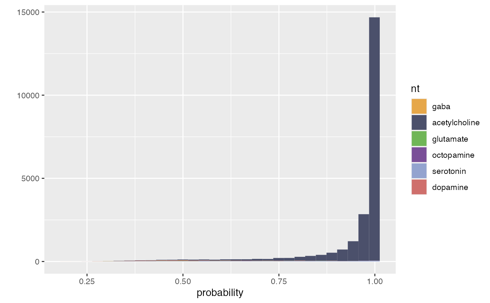
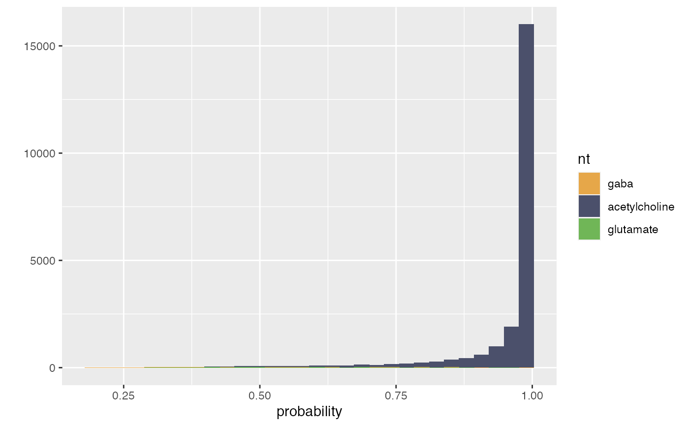
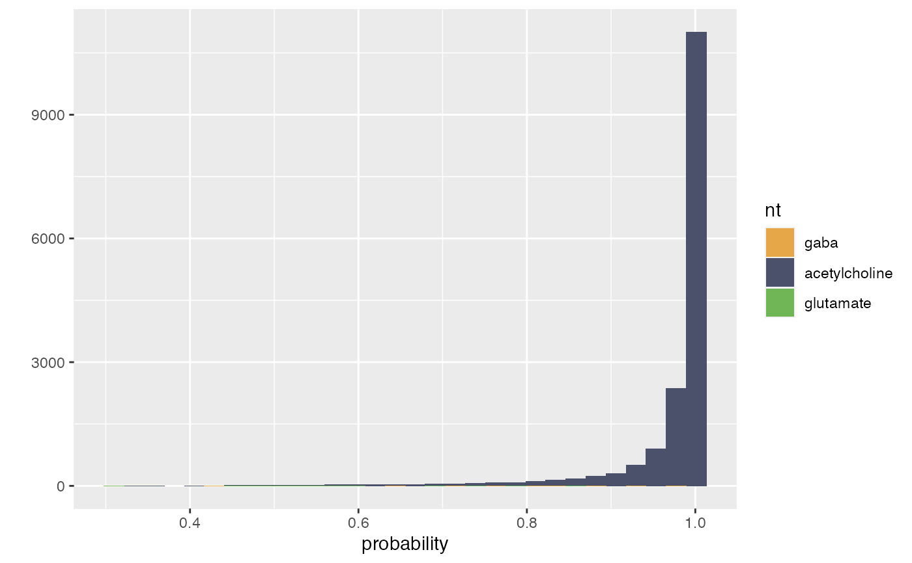
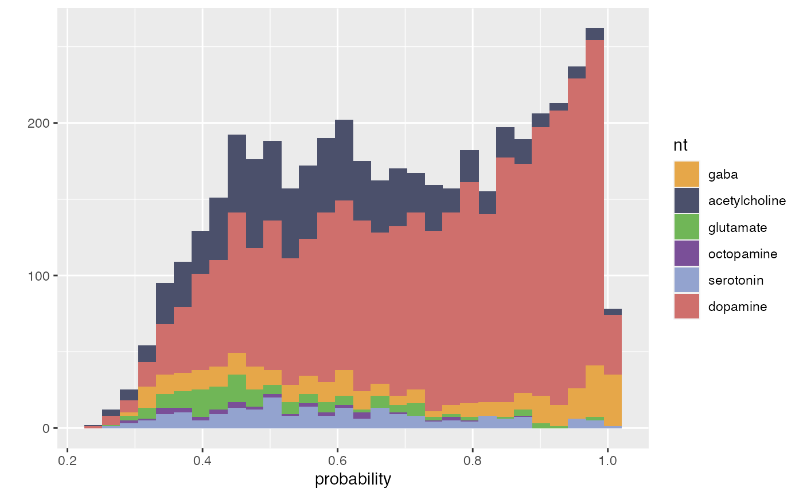
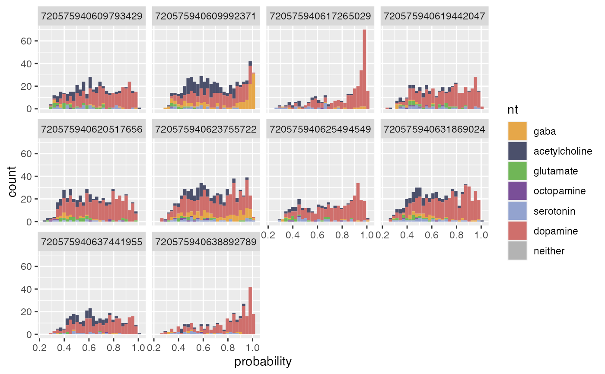

flywire_ntplot plots a ggplot2 histogram of predicted
neurotransmitter vs prediction probability.
flywire_ntplot3d makes a 3D plot of synapse location
flywire_ntplot(
x,
nts = c("gaba", "acetylcholine", "glutamate", "octopamine", "serotonin", "dopamine",
"neither"),
cleft.threshold = 0,
local = NULL,
cloudvolume.url = NULL
)
flywire_ntplot3d(
x,
nts = c("gaba", "acetylcholine", "glutamate", "octopamine", "serotonin", "dopamine"),
plot = c("points", "spheres"),
cleft.threshold = 0,
local = NULL,
cloudvolume.url = NULL,
...
)A flywire rootid or a data.frame of neurotransmitter predictions
returned by flywire_ntpred
A character vector of neurotransmitters to include in the plot (default all 6)
A threshold for the cleft score calculated by Buhmann et al 2019 (default 0, we have used 30-100 to increase specificity)
path to SQLite synapse data. Evaluated by
fafbseg:::local_or_google. Work in progress. Default is to download
this data and place it in ~/projects/JanFunke.
The segmentation source URL for cloudvolume. Normally
you can ignore this and rely on the default segmentation chosen by
choose_segmentation
Whether to plot points or spheres ("points" with size=5
works quite well)
additional arguments passed to spheres3d or
points3d
flywire_ntplot returns a ggplot2::ggplot object
that can be further customised to modify the plot (see examples).
Other automatic-synapses:
flywire_adjacency_matrix(),
flywire_neurons_add_synapses(),
flywire_ntpred(),
flywire_partners()
# \donttest{
# a cholinergic olfactory projection neuron
ntp=flywire_ntpred("720575940615237849")
flywire_ntplot(ntp)
#> `stat_bin()` using `bins = 30`. Pick better value with `binwidth`.

flywire_ntplot(ntp, nts=c("gaba", "acetylcholine", "glutamate"))
#> `stat_bin()` using `bins = 30`. Pick better value with `binwidth`.

flywire_ntplot(ntp, nts=c("gaba", "acetylcholine", "glutamate"), cleft.threshold=100)
#> `stat_bin()` using `bins = 30`. Pick better value with `binwidth`.

# ids for several Kenyon cells
kcsel=c("720575940623755722", "720575940609992371", "720575940625494549",
"720575940619442047", "720575940620517656", "720575940609793429",
"720575940617265029", "720575940631869024", "720575940637441955",
"720575940638892789")
kcpreds=flywire_ntpred(kcsel)
# collect the ggplot object
p <- flywire_ntplot(kcpreds)
# print it to see the aggregate plot (all neurons together)
p
#> `stat_bin()` using `bins = 30`. Pick better value with `binwidth`.

# ... or use ggplot facets to separate by query neuron
p+ggplot2::facet_wrap(query~.)
#> `stat_bin()` using `bins = 30`. Pick better value with `binwidth`.

# }
if (FALSE) {
flywire_ntplot3d(ntp, nts=c("gaba", "acetylcholine",
"glutamate"), plot='points', cleft.threshold=30, size=5)
}